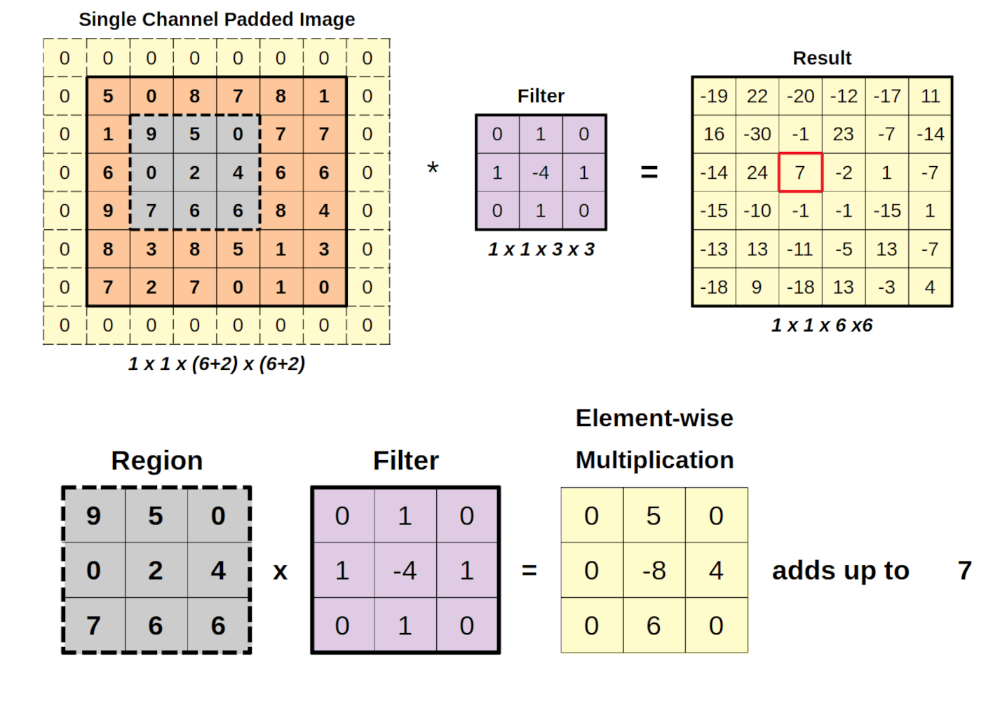

A Crash Course on Neural Networks#
Learning Objectives#
Develop a working knowledge of three types of neural networks: feedforward neural networks (FNNs), convolutional neural networks (CNNs), and transformers.
Understand the role that symmetry plays in the design of CNNs.
Understand the attention mechanism in transformers.
Understand the role of minibatching in training neural networks
Develop best practices for training neural networks, including how to choose the learning rate, how to initialize the weights and biases, and how to prevent overfitting.
Neural Network Architectures#
Below, we discuss three of the most commonly used types of neural network architectures: feedforward neural networks (FNNs), convolutional neural networks (CNNs), and transformers. Each of these architectures is designed to take advantage of different types of structure in the data, and each has its own strengths and weaknesses.
Feedforward Neural Networks (FNNs)#
Feed forward neural networks (FNNs) are some of the first, and simplest, types of neural networks. Mathematically, a feedforward neural network is a composition of ‘’layers’’ of the form
where \(W\) is a matrix of weights, \(b\) is a vector of biases, and \(\sigma\) is a non-linear activation function. The parameters \(W\) and \(b\) are the weights and biases of the network respectively. Common choices for activation functions include the sigmoid function, the hyperbolic tangent function, and the rectified linear unit (ReLU) function, plotted below:
Currently, the ReLU function is the most commonly used activation function in deep learning, due to its simplicity and effectiveness in training deep networks.
When we compose multiple layers of the form above, we get a feedforward neural network. For example, a feedforward neural network with two hidden layers can be written as
In the hidden layers, each layer takes the output of the previous layer. The number of rows in each matrix is the number of ``neurons’’ in that layer. This must match the number of columns in the next weight matrix \(W_{i+1}\). Precisely how big these weight matrices are is a design choice, and is one of the hyperparameters of the network. However, it as also one that doesn’t matter too much as long as it is sufficiently large. In practice, 32 x 32 or 64 x 64 are good choices for starting values, and you can scale up from there if you have the computational resources and desire more performance. The number of hidden layers is also a design choice, and is another hyperparameter of the network. In practice, 2-4 hidden layers are often sufficient for many tasks.
Care must be designing the last layer of the network, as it must be designed to output the correct type of output for the task at hand. For example, if we are doing binary classification, we might want the last layer to output a single value between 0 and 1, which can be interpreted as a probability. In this case, we might use a sigmoid activation function in the last layer.
If we are doing regression, we might want the last layer to output a single value from \((-\infty, \infty)\), in which case we might not use any activation function in the last layer.
If we are doing multi-class classification, we might want the last layer to output a vector of probabilities for each class, in which case we might use a softmax activation function in the last layer. The softmax function is defined as
This generalizes the sigmoid function to multiple classes (as an exercise, you can verify that the softmax function reduces to the sigmoid function when there are only two classes). The softmax function takes a vector of real numbers and outputs a vector of probabilities that sum to 1.
Convolutional Neural Networks (CNNs)#
Feed forward neural networks are very general, and can be used for a wide variety of tasks. However, their limits quickly became apparent when they were applied to tasks like image recognition. Consider applying a feedforward neural network to a 128x128 pixel image. The input layer would have 128x128 = 16,384 neurons, and even if the first hidden layer had 64 neurons, then the weight matrix \(W_1\) would have 16,384 x 64 = 1,048,576 parameters – already a very large number of parameters.
Moreover, feed-forward networks do not leverage the spatial structure of images. If we shift an image to the left, the feedforward neural network would have to learn to recognize the same object in a different position, which is inefficient and requires a lot of data. Convolutional neural networks (CNNs) were designed to address these issues by leveraging the spatial structure of images and reducing the number of parameters.
The key behind a convolutional network is to structure the linear operation in each layer by constraining it to act as a convolution. For simplicity, consider a one-dimensional signal, with values \(x_1, x_2, \ldots, x_n\). A convolutional layer convolves a kernel (or filter) of weights \(w_1, w_2, \ldots, w_k\) with the input signal to produce an output signal. The convolution operation can be written as
(Technically this is a cross-correlation operation.) This operation is repeated across the entire input signal, producing an output signal of length \(n-k+1\). The kernel weights \(w_j\) are shared across the entire input signal. In the Figure below, we give an illustration for a two-dimensional image, where the kernel is a 3x3 matrix of weights that is convolved with the input image to produce an output image.

Convolutional neural networks substantially reduce the number of parameters compared to feedforward neural networks. Moreover, they naturally respect translation symmetry in the signal: if we shift the input signal the output will shift in the same way.
Equivariance#
Formally, respecting symmetries is known as equivariance to translation. This is a group-theoretic property, and can be expressed succinctly using the following commutative diagram:
where \(T\) and \(T'\) are translation operators on the input and output spaces respectively. The diagram says that if we first apply the function \(f\) to the input, and then translate the output, we get the same result as if we first translate the input, and then apply the function \(f\). In other words, the function \(f\) commutes with the action of the translation group.
For some physical applications, we might want to respect other symmetries, such as rotation or scaling. In these cases, we can design convolutional neural networks that are equivariant to these symmetries as well. For a theoretical discussion of how to design convolutional neural networks that are equivariant to (nearly) arbitrary symmetries, see the paper “On the generalization of equivariance and convolution in neural networks to the action of compact groups” by Trivedi and Kondor (https://proceedings.mlr.press/v80/kondor18a.html).
Here, we consider a simple implementation of a neural network that is equivariant to three-dimensional rotation, \(\text{SO}(3)\). The action of the rotation group will be given by powers of the rotation matrix \(R\). Consequently, all of the neurons in the network will be given by
Single scalars \(x\) that are invariant to rotation, i.e. \(x \to x\) under the action of the rotation group.
Vectors \(\vec{v}\) that transform as \(\vec{v} \to R \vec{v}\) under the action of the rotation group.
Matrices that transform as \(T_{ij} \to R_{ik} R_{jl} T_{kl}\) under the action of the rotation group.
etc.
We can then design a neural network that takes these many different inputs, each of this type, and takes a linear combination of them to produce outputs of the same type. For example, we can take a linear combination of two vectors \(\vec{v}_1\) and \(\vec{v}_2\) to produce a new vector \(\vec{v} = w_1 \vec{v}_1 + w_2 \vec{v}_2\). This gives us a learned linear operation that is equivariant to rotation: rotating a sum of two vectors is the same as summing the two vectors after they have been rotated.
Next, we need a way of introducing non-linearity into the network. For the scalars, we can apply any non-linear activation function, such as ReLU, to produce a new scalar that is still invariant to rotation. However, for vectors or higher-order tensors, we need to be more careful. For instance, applying a ReLU to a vector would not produce a new vector that transforms correctly under rotation. Consider rotating the vector \(\vec{v} = (-1, 1, 0)\) by 90 degrees clockwise around the z-axis. This results in the vector \(\vec{v}' = (1, 1, 0)\), and applying the ReLU then gives \(\text{ReLU}(\vec{v}') = (1, 1, 0)\). However, if we first apply the ReLU to \(\vec{v}\) and then rotate, we get \(\text{ReLU}(\vec{v}) = (0, 1, 0)\) and rotating gives \(\text{ReLU}(\vec{v})' = (1, 0, 0)\). This is not the same as applying the ReLU after rotating: we have not achieved equivariance!
Instead, one way to introduce non-linearity while preserving equivariance is to take variations of the tensor product between vectors. For instance, we can take the cross product of two vectors \(\vec{v}_1\) and \(\vec{v}_2\) to produce a new vector \(\vec{v} = \vec{v}_1 \times \vec{v}_2\). We can also take the dot product of two vectors \(\vec{v}_1\) and \(\vec{v}_2\) to produce a new scalar \(x = \vec{v}_1 \cdot \vec{v}_2\). Both of these operations are equivariant to rotation, and can be used to introduce non-linearity into the network while preserving equivariance.
More mathematically advanced versions of this idea have been implemented in the literature, often writing out these operations in terms of spherical harmonics. For instance, the papers “Tensor field networks: Rotation- and translation-equivariant neural networks for 3D point clouds” by Thomas et al. (https://arxiv.org/abs/1802.08219) and “Clebsch–gordan nets: a fully fourier space spherical convolutional neural network” by Kondor et al. (https://proceedings.neurips.cc/paper/2018/hash/a3fc981af450752046be179185ebc8b5-Abstract.html) give examples of how to design neural networks that are equivariant to three-dimensional rotation using spherical harmonics.
Warning
Note: The design of equivariant neural networks was a hot area of research in the late 2010s and early 2020s. However, in the author’s opinion this is an area that has largely underdelivered. A key reason for this is that (a) the design of equivariant neural networks is often very complicated, and (b) equivariance is highly restrictive on the nonlinearities that can be used in the network, limiting expressivity. Moreover, if invariance to a symmetry is desired, then it is often easier to achieve this by using data augmentation to train a non-feedforward neural network. In this paradigm, one takes the data and applies a random group transformation to it before feeding it into the network. For a large amount of data, this can be just as effective as designing an equivariant neural network, and is much easier to implement. Alternatively, many problems have natural ``reference points’’ (e.g. the north pole on the Earth) that can be used to break the symmetry and put the data in a canonical position. This is also a very effective way of achieving invariance to a symmetry.
For a long time, the one remaining area where equivariant networks saw considerable use was the design of neural networks that predict energies of physical systems. However, even in this area, the use of equivariant networks has largely been replaced by the use of non-equivariant networks: for instance, see Bigi et al. “Pushing the limits of unconstrained machine-learned interatomic potentials” (arxiv.org/abs/2601.16195).
Transformers#
Coming back to regular convolutional networks, one of the limitations of CNNs is that the filter is fixed: it is used at every location in the input. This is a good design choice for images, where we expect the same features to be useful across the entire image. However, for other types of data, such as natural language, this is not a good design choice. In natural language, the meaning of a word can depend heavily on the context in which it appears. For instance, the word “bank” can refer to a financial institution or the side of a river, depending on the context. A fixed filter would not be able to capture this contextual information effectively.
The Attention Mechanism#
This has motivated the development of “attention” mechanisms, which vary the amount of signal any location gets based on a learned function of the input. The key idea behind the attention mechanism is to compute a weighted sum of the input features, where the weights are determined by a learned function of the input. In practice, given two input signals \(x\) and \(y\) of length \(m\) and \(n\) respectively, we compute three different linear transformations of the input: the “query” \(Q\), the “key” \(K\), and the “value” \(V\). These are given by
We then compute the attention weights as
Then, the output of the attention mechanism is given by
This tells us how much of the value \(V_j\) in \(x\) to include in the output, based on how well the query \(Q_i\) matches the key \(K_j\). This key represents a learned function of the input that encodes what \(y_j\) is “looking for” in \(x\).
Transformers are neural network architectures that are built around the attention mechanism. IN each layer of a transformer, we have a multi-head attention mechanism, which consists of multiple parallel attention mechanisms that operate on different linear transformations of the input. This allows the transformer to capture different types of relationships between the input features. The output of the multi-head attention mechanism is then passed through a feedforward neural network, and this process is repeated for multiple layers. The final output of the transformer is then used for the task at hand, such as classification or regression.
Positional Encoding#
One thing to note, however, is that the attention mechanism is completely equivarint to permutation of the input. In fact, this makes attentions, and transformers, surprisingly flexible: most symmetries can be discretized into finite groups, potentially at the cost of some accuracy. However, every finite group is the subset of the permutation group. Consequently, applying an attention layer to a set of inputs is equivariant to any symmetry that can be discretized into a finite group. This is a powerful fact, and is one of the reasons why transformers have been so successful.
However, since the attention layer is, by definition, equivariant to permutation, it by definition has no sense of the order of the input. This is a problem for natural language processing, where the order of the words is crucial for understanding the meaning of a sentence. To address this issue, transformers use positional encoding, which adds a learned or fixed encoding to the input features that encodes the position of each word in the sentence. This allows the transformer to capture the order of the words in the input, while still leveraging the flexibility of the attention mechanism. A classic, and still widely used, choice for positional encoding is to use sinusoidal functions of different frequencies, as described in the original transformer paper “Attention is All You Need” by Vaswani et al. (https://arxiv.org/abs/1706.03762). Given a token at position \(pos\) and a dimension \(i\), the positional encoding is given by evaluating \(sin(k pos )\) for even \(i\) and \(cos(k pos )\) for appropriately chosen values of \(k\). This gives us a unique encoding for each position in the input, while ensuring that that the outputs of the positional encoding remain bounded between -1 and 1, which is important for training stability.
To incorporate the positional encoding into the transformer, we add it the values to the input features before feeding them into the attention mechanism. Specifically, assume that we have an input signal \(x_{ic}\) where \(i\) indexes the position in the input and \(m\) indexes the feature dimension. For each position, we calculate the positional embedding \(p_il\) We then compute the new input to the network as
where \(w_{ml}\) is a learned weight matrix.
One might ask: why do we sum the positional encoding with the input features, rather than concatenating them? In general, the correct way to combine information for neural networks is through summation rather than concatenation. Say, we have two vectors, \(v\) and \(w\), each the output of a previous layer of a neural network. One way to combine them would be to concatenate them into a new vector, which would be the input to the next layer. But this is equivalent to the following operation:
However, we could also have made the zero entries in the first vector learnable, and the zero entries in the second vector learnable. We could then choose to the vectors zero, but we would not be forced to do so. This would give us more flexibility. Consequently, we could simply sum the two vectors together, and let the network learn how to combine them.
Positional encoding can be naturally extended to data with more complex symmetries, such as images, or three-dimensional point clouds. In general, good positional encodings have a few good properties:
They should be unique, or at least close-to-unique, for each position in the input.
They should stay bounded (ideally between -1 and 1) to ensure training stability.
They should reasonably reflect the structure of the data. For instance, a desirable process might be smoothness: a small change in the position should lead to a small change in the positional encoding. This is not strictly necessary, but it can help introduce an inductive bias that can improve performance.